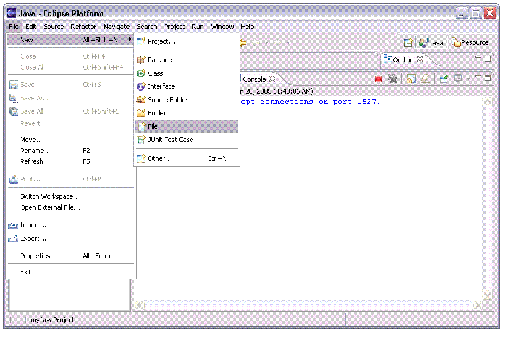
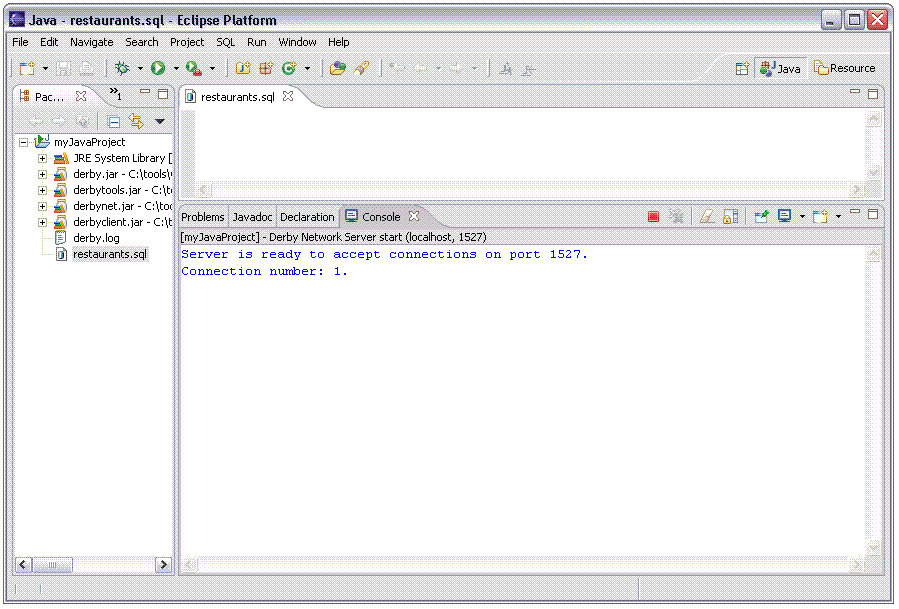
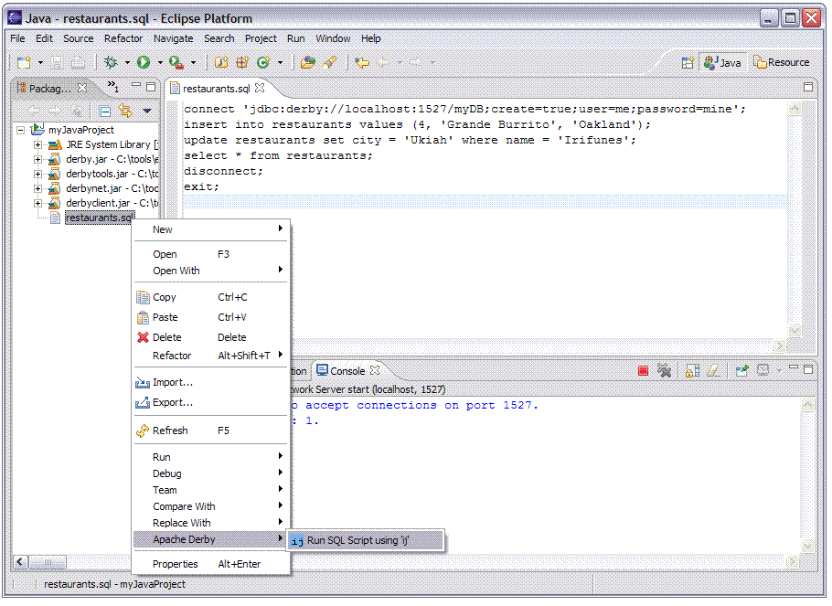
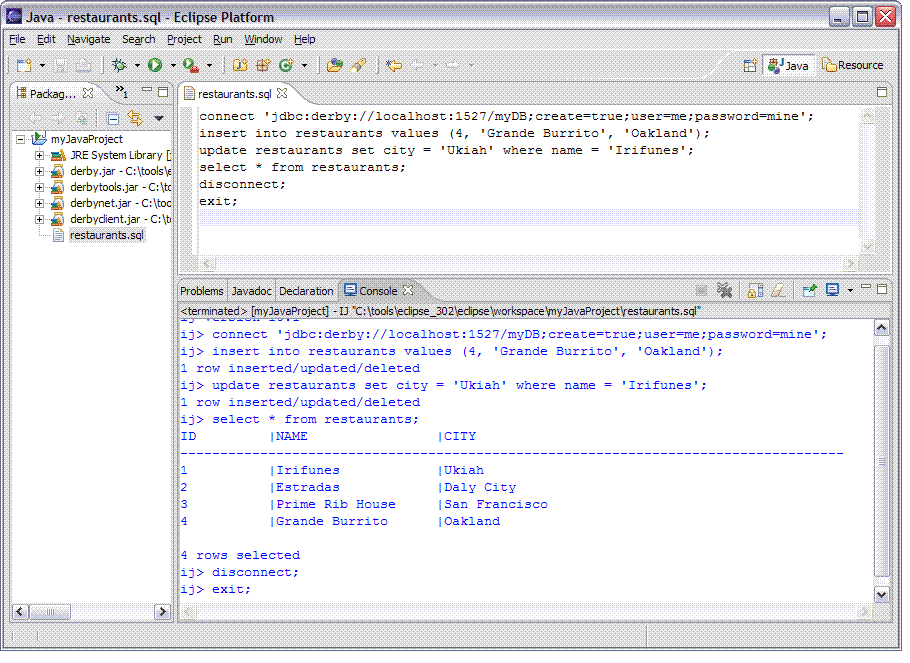

ij scripts, files that end in an .sql extension and contain SQL commands, can be run using the Derby plug-ins. This allows you to use SQL scripts containing multiple commands and run them in a single execution of ij.
We'll go through a complete example below with an sql file called restaurants.sql. This script relies on a table we created in the help section, Use ij to issue SQL commands. Run that SQL prior to completing these steps.
From the main Eclipse menu select File, New, File.

Use the current Java project as the parent folder, for example, myJavaProject. Name the file restaurants.sql, and click Finish.
Now the workspace will look like this.

Type the following in the restaurants.sql editor window (you may need to double click the restaurants.sql file to create an editor window to type in.)
connect 'jdbc:derby://localhost:1527/myDB;create=true;user=me;password=mine;'; insert into restaurants values (4, 'Grande Burrito', 'Oakland'); update restaurants set city = 'Ukiah' where name = 'Irifunes'; select * from restaurants; disconnect; exit;
Now save the restaurants.sql file so we can run the script. Use Ctrl + S in the windows environment to save an open file. Once the file has been saved the asterisk will disappear next to the name of the file in the editor.
The last step is to run the SQL script. Right-click the restaurants.sql file in the Package Explorer view and select Apache Derby, Run SQL Script using 'ij'.

The Console view shows the SQL commands contained in the file and executing in ij along with the output of the commands.
